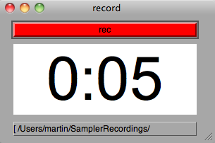

Recording
Press the red 'rec' button or hit R on your keyboard to open the recording window.

Recording happens from the main output of the sampler, defined in the Preferences. Sounds that are routed specially via the 'output channel' setting are not included in the recording.
Start recording with spacebar or clicking rec, stop the same way.
Recordings are saved in a folder in your home folder called SamplerRecordings:
~/SamplerRecordings
labled with the name of the sampler and date/time:
mySampler120802_134016.wav
You can also use the recording straight away by dragging the text at the bottom on to a key, knob or slider.